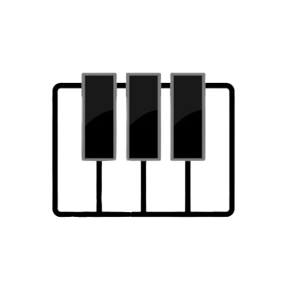
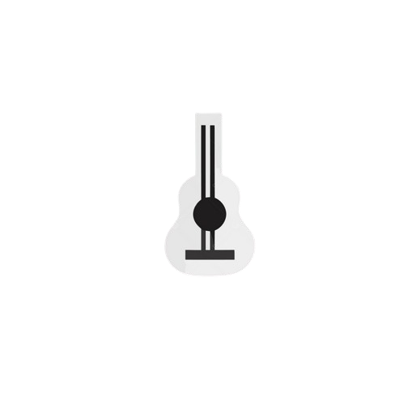

The piano, with its 24 keys, turns beats into captivating melodies.¡An instrument full of magic!
The drums, with their powerful rhythm, set the pulse of the music.Its rhythm creates energy and emotion, ¡essential for the beat!

The guitar, with its vibrant strings, creates melodies that resonate in the heart. ¡An instrument full of passion!